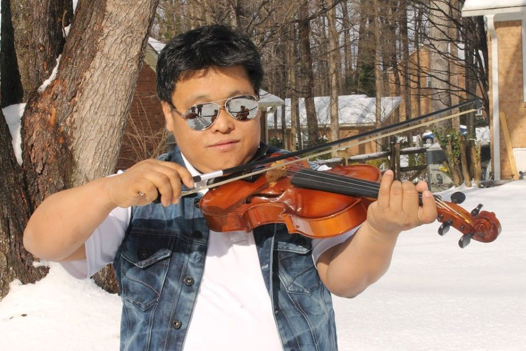

About
Manoj K. Rai is the Founder President of the Love & Support Foundation, a nonprofit organization dedicated to seeking justice and peace through education and empowerment of underprivileged youth, including males, females, and orphans.
He is a social activist, singer, songwriter, and music composer of Nepali music. As a former refugee from Bhutan, Manoj spent 10 years as a teacher. He also served as the Camp Administration Chief and Camp Secretary (Chief of Camp Management Committee), and was the Press and Publicity Secretary of the Bhutanese Refugee Durable Solution Coordination Committee.
Resettled in the United States in 2008, Manoj co-founded the Organization of Bhutanese Communities in America (OBCA) and held the position of Press & Publicity Secretary. Under his leadership, the first Nepali magazine in the U.S., "Bhutan", was published in 2010.
Manoj has received numerous awards for his civic leadership, volunteer work, singing, and music composition. Notable recognitions include the Community Treasure Award (2010) by the Jacksonville Public Library in Florida and the honor of Nepali Singer and Music Composer (2015) by Saptarangi Srijanshil Samuha and Rhythm Recording, Darjeeling, India. He has also been honored by many Bhutanese and Nepali communities across America.
Academically, Manoj is a graduate of Caesar School, Malbazar, India, and holds a Bachelor of Arts from North Bengal University.